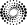

Alexandre Giuliani
Spectroscopy & Spectrometry
About me
Contact
Alexandre Giuliani 1
Synchrotron SOLEIL
L'Orme des Merisier
91192 Gif-sur-Yvette
France
 +33 (0)1 69 35 97 29
+33 (0)1 69 35 97 29
alexandre[.]giuliani[at]synchrotron-soleil[.]fr
@ajgiuliani
ajgiuliani
0000-0003-1710-4933
35944247700
 C-1476-2011

My resumé is available here  .
.
CAREER
Since 2006 Senior Research Engineer, CEPIA Department, INRA on secondment at SOLEIL synchrotron on the DISCO beamline.
Since 2006 Beamline scientist, DISCO beamline with Dr. M. Refregiers, SOLEIL, Gif-sur-Yvette, France.
2006 - 2004 Postdoctoral fellowship with Pr. Olivier Laprévote, Mass spectrometry laboratory, ICSN, CNRS, France.
2004 - 1998 Assistant with Pr. Jacques Delwiche, Université de Liège, Belgium.
EDUCATION
2013 Habilitation to conduct research University Paris-Sud (FR), Faculty of Sciences. Spectroscopy of ions and molecules of biological interest using synchrotron radiation. Committee: A. Zehnhacker, E. Uggerud, E. De Pauw, O. Laprévote, P. Maitre, J. Delwiche.
2003 Doctoral degree. in Sciences University of Liège (BE) with Dr. M.-J. Hubin-Franskin, Obtained with the highest distinction and the congratulations of the jury. Furan and some selected derivatives. A valence shell spectroscopic study by photon and electron impact methods.
1998 Licence in Chemical Sciences University of Liège (BE) with Dr. M.-J. Hubin-Franskin.
OTHER QUALIFICATIONS
2014 Qualification for university professorship CNU section 30 (dilute matter and optics) and 31 (theoretical, physical and analytical chemistry). This qualification is mandatory to apply for professorship positions in France.
PRODUCTION
103 Peer-reviewed Publications
10 Conference Proceedings
3 Patents
18 Posters
1535 Citations 3
AWARDS
2018 Instrumentation award of the French Chemical Society. 
2005 Annual prize of the Royal Academy of Sciences, Letters and Fine Arts of Belgium, Section of Mathematics and Physics, Brussels, Belgium.
STUDENTS MENTORSHIP
2018-2015 Thesis Director of Suzie Douix, University Paris-Saclay, France.
2012-2009 Supervision of two postdocs. Drs Milosavljevic and Canon are currently Assistant Professor at the Institute of Physics of Belgrade (Serbia) and Research Fellow at CGSA, INRA Dijon.
2009–2004 Scientific supervision of PhD students (Aicha Bagag, Julia Allegrand) and 1 Master student (Delphine Debois), University d'Evry Val-d'Essonne, France.
TEACHING ACTIVITIES
2015 Course on ambient ionization, youth club of the French mass spectrometry society, Montélimar, France.
2009 Course on photoionization at atmospheric pressure, youth club of the French company of mass spectrometry, Borzée, Belgium.
2004 - 1998 Lecturer (Assistant) in General Chemistry and Physical Chemistry courses, University of Liège (Belgium).
~120 teaching hours per year.